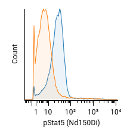

histogramSubtraction.RmdThe function below subtracts two histograms to calculate an estimated “percent positive.” Four estimation methods are provided:
"channel-by-channel" is as described in Overton 1988 and simply subtracts the two histograms, bin-by-bin, then sets negative differences to zero. (Histogram bins were historically called “channels” on old, analog cytometers.)
"Overton" is as described in Overton 1989 and is like “channel-by-channel,” except negative values are subtracted from other bins instead of set to zero.
"ENS" is the “enhanced normalized subtraction method” described in https://www.vsh.com/publication/JourneyThroughImmunofluorescenceAnalysis.pdf. In some places, this is also referred to as the “super-enhanced D value,” “SED” or “SEDymax,” although there is another unpublished definition for “SED” that is different from “ENS.” See also https://www.vsh.com/Publication/SuperEnhancedDValue.pdf. This method does not support showPlot=TRUE.
"KS" is the Kolmogorov-Smirnov test D-value. Its value is the same as "Overton" but it does not support showPlot=TRUE.
Below is an example histogram and the percent positive calculated by each method:

| Method | Estimate |
|---|---|
| ENS | 83.7% |
| channel-by-channel | 66.8% |
| Overton | 66.1% |
| KS | 66.2% |
#' Performs subtraction of two histograms to calculate percent positive.
#'
#' @param experimentId ID of experiment or a [`byName`] expression.
#' @param channel The channel name, like "PE-A" (not the reagent name like
#' "CD3").
#' @param population The population ID or a [`byName`] expression.
#' @param file1 ID or `byName` expression of the file to subtract from (the test
#' or sample file).
#' @param file2 ID of `byName` expression of the file to subtract (the control
#' file).
#' @param method One of `"channel-by-channel"`, `"Overton"`, `"ENS"` or `"KS"`.
#' @param bins The number of histogram bins/channels. (Not applicable to `"KS"`
#' method.)
#' @param showPlot If `TRUE`, displays a barplot of the subtracted histograms.
#' (Not applicable to `"KS"` or `"ENS"` methods.)
#' @md
#' @examples
#' \dontrun{
#' library("cellengine")
#' authenticate() # prompts for username and password
#' subtractHistograms("5af60df8e1694f07a276a307", # experimentId
#' channel = "Nd150Di",
#' population = byName("CD33+"),
#' file1 = byName("LRS047_IL2GMCSF.fcs"),
#' file2 = byName("LRS047_unstim.fcs"),
#' method = "ENS")
#' # returns a scalar estimating the percent positive.
#' }
subtractHistograms <- function(experimentId,
channel,
population,
file1,
file2,
method="ENS",
bins=256,
showPlot=TRUE) {
if (!(method %in% c("channel-by-channel", "Overton", "ENS", "KS")))
stop("method must be one of 'channel-by-channel', 'Overton', 'ENS' or 'KS'.")
experiment = getExperiment(experimentId)
scaleSet = getScaleSets(experimentId)$scales[[1]]
scale = scaleSet[scaleSet$channelName == channel, "scale"]
if (nrow(scale) == 0)
stop(paste0("Channel ", channel, " not found in experiment. Please check the spelling."))
file1data = getEvents(experimentId,
file1,
population,
compensatedQ = TRUE,
compensation = experiment$activeCompensation,
headerQ = TRUE,
format="TSV")
file2data = getEvents(experimentId,
file2,
population,
compensatedQ = TRUE,
compensation = experiment$activeCompensation,
headerQ = TRUE,
format="TSV")
# TODO: in v1 of the CellEngine toolkit, remove make.names here.
# sub() is used to remove the leading X from make.names("488") -> "X488"
file1col = file1data[, grepl(sub("^X", "", make.names(channel)), colnames(file1data))]
file2col = file2data[, grepl(sub("^X", "", make.names(channel)), colnames(file2data))]
# Warning: if clamp_q = FALSE, then ultra-negative values can impact histograms.
file1col = applyScale(scale, file1col, clamp_q = FALSE)
file2col = applyScale(scale, file2col, clamp_q = FALSE)
if (method == "KS") {
ks = ks.test(file2col, file1col, alternative="greater")
return(100 * ks$statistic)
}
# Precompute bins
minVal = min(file1col, file2col)
maxVal = max(file1col, file2col)
breaks = seq(minVal, maxVal, length.out = bins + 1)
# Bin data into histogram
file1counts = tabulate(cut(file1col, breaks, labels=F, include.lowest=T), nbins=bins)
file2counts = tabulate(cut(file2col, breaks, labels=F, include.lowest=T), nbins=bins)
# Rescale the counts as if the same number of events are in both histograms.
normFactor = length(file1col) / length(file2col)
file2counts = file2counts * normFactor
if (method == "channel-by-channel") {
difference = file1counts - file2counts
difference = pmax(difference, 0)
if (showPlot)
barplot(difference)
return(100 * sum(difference) / length(file1col))
} else if (method == "ENS") { # Super enhanced D-max
# Cumulative sum, normalized to 1
cum1 = cumsum(file1counts)
cum1 = cum1 / cum1[length(cum1)]
cum2 = cumsum(file2counts)
cum2 = cum2 / cum2[length(cum2)]
# Max positive difference
xd = which.max(cum2 - cum1)
Cx = cum2[xd]
Tx = cum1[xd]
Dx = Cx - Tx
# In theory, Dx is equal to Overton's subtraction.
# Dx / Cx is the "enhanced Dmax" (pos_ed, scenic view 4)
# Keep the histogram portion from 1 to xd and renormalize so the sum is 1
cum1d = cum1[1:xd]
cum1d = cum1d / cum1d[length(cum1d)]
cum2d = cum2[1:xd]
cum2d = cum2d / cum2d[length(cum2d)]
xd2 = which.max(cum2d - cum1d)
pos_ens = (Cx - Tx) / Cx + (cum2[xd2] * Tx - Cx * cum1[xd2]) / (Cx * Cx)
return(100 * pos_ens)
} else { # Overton with corrections.
# See Appendix A of Overton 1988 and Overton 1989
low = 1
for (chan in 1:bins) {
diff = file1counts[chan] - file2counts[chan]
file1counts[chan] = max(0, diff)
while (diff < 0 && low < chan) { # On negative differences, cumulative subtract.
while (file1counts[low] <= 0 && low < chan) {
low = low + 1
}
if (low < chan) { # Cancel out positive differences in lower channels.
diff = diff + file1counts[low]
file1counts[low] = max(diff, 0)
}
}
}
if (showPlot)
barplot(file1counts)
return(100 * sum(file1counts) / length(file1col))
}
}